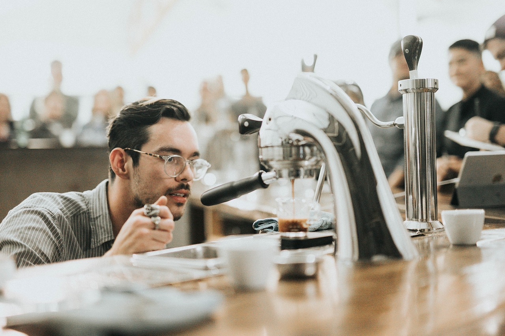

Brunch
Our Mission - is to satisfy our neighbor's need for coffee and community by providing high quality, direct trade coffee that we all can feel good about.
Our Beans - are the result of direct trade. With a handshake, the farmer's crop is purchased for more than they could get on the open market. Through the Friend2Farmer initiative, better coffee is being created, along with a better quality of life for the farmers, their families and their community. Due to the strong relationships being built, we are able to play a part in helping fund local schools and other life-enriching projects within these communities. We believe that nothing's better than waking up and knowing the delicious coffee you're drinking is helping to brew better lives, better coffee and better communities all over the world.

Distinctive and Bold - is to inspire a culture of generosity and authenticity; helping to create the kind of community (local + worldwide) that we all want to call home. Locally, by partnering and building strong relationships with local non-profits and businesses to meet the needs of our neighbors. Worldwide, by ensuring that the farmers who provide us our coffee beans, and the communities in which they are apart, are treated equitably.